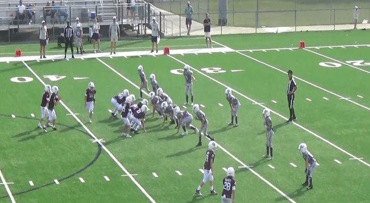
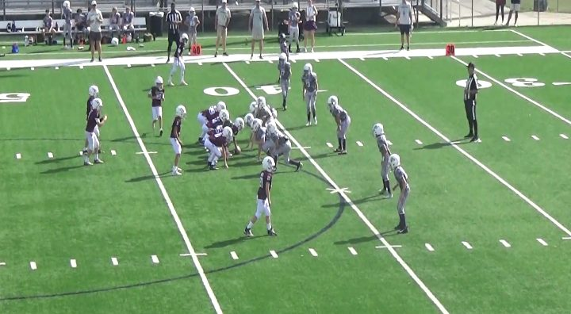
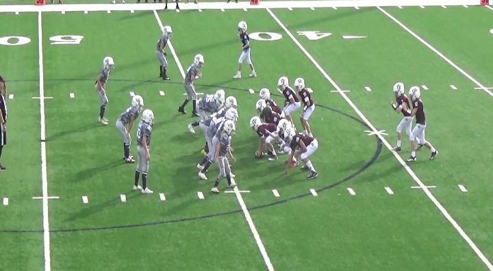
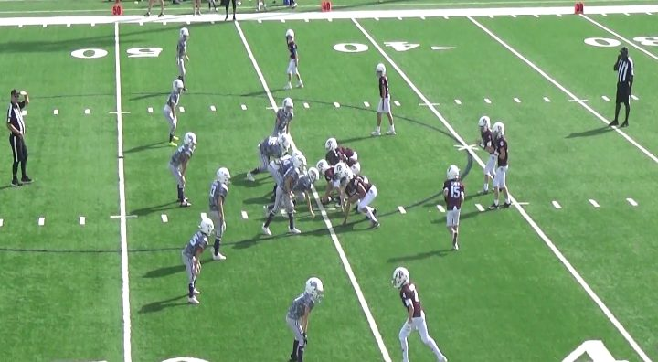

prepared by Mr. Wang from Aggies vs Horned Frogs, November 7, 2026
Stop the QB off tackle to the strong side. Stay home on the back side
The Aggies run their quarterbacks off tackle to the strong side, over and over.
30 of their 34 plays were runs, and 24 of the 26 runs with a side went strong. They rotate
two quarterbacks, #12 and #7, who line up side by side in the shotgun and take turns getting the snap. Both run it.
They went weak side only 2 times, and those were two of their biggest plays: a 40-yard touchdown and a 30-yard
reverse. Same as our September card from their Texans film, where 22 of 23 runs went strong.
Keys from our September game
1. Find the overload side and shift to it
24 of their 26 runs with a side went to the strong side: the side with the extra wingback,
tight end or receivers. Shift the defense that way. Sometimes it only shows once the motion happens: in Spread 4 WR
(two receivers each side) and look 2 of the main set, the slot's motion tells you, so shift again after the motion.
2. Watch the motion
Long motion, all the way across: the run is coming that way (3 of 4). Short
motion that stops next to the tackle: misdirection, the run goes back the other way (9 of
9). How to read it.
3. Expect the weak-side surprise
They went weak side only 2 times, but those were two of their biggest plays: the 30-yard reverse and
#7's 40-yard touchdown. The backside has to stay home.
4. Tackle low, wrap up, gang tackle
We missed way too many tackles last time. Hit low, wrap the arms and drive through. Everybody runs to the ball:
the second and third man finish the tackle.
Read the motion
Watch how far the motion man goes. If he goes all the way across, the run follows him. If he stops short,
it is misdirection: the run goes back to where he came from.
Motion
What it looks like
The run goes
Charted runs
Note
All the way across
Look 1: the far WR crosses to sit behind the wingback. Heavy: the weak wingback crosses to the other one.
Toward the motion
3 of 4
The miss was the reverse on 40. Heavy's motion also set up both fly-route passes
Stops short
Look 2 and Spread 4 WR: the slot comes in next to the right tackle.
Back where he came from
9 of 9
No misses
Long motion runs: plays 26, 27, 40, 50. Short motion runs: plays 4, 5, 62, 63, 79, 80, 81, 82, 83. The two Heavy
passes (9, 54) came after the long motion too, both with #4 split out wide: if he is out there, or #7 lines up at wingback instead of next to #12, think pass. Play 85 (2 WR + 2 wingbacks) had motion but is not sorted
as long or short.
Where their runs go
Call
Runs
Which way
Yards
QB Off Tackle
20
19 strong · 0 weak
7.0 avg · long 37 · 1 TD
QB Dive
7
4 strong · 0 weak
7.4 avg · long 15
WR Reverse
1
0 strong · 1 weak
30 yds
QB Scramble
1
1 strong · 0 weak
20 yds
QB Blast Weak
1
0 strong · 1 weak
40 yds TD
The three dives with no strong side came from Trips with two fullbacks, which is balanced. Motion on
16 of 34 snaps: the slot or a wingback runs across before the snap.
Their formations
Their three main looks, 26 of their 34 plays. The boards are drawn from the personnel; the film frame beside
each one shows how they really lined up.
A. Shotgun 3 WR + Wingback Off Tackle Strong
12 of their 34 plays: 12 runs. Two looks, both running to the twins side.
Look 1: WB with the twins · 5 plays
Their favorite. The far receiver lines up tight, 3 yards off the line, then motions across to sit right behind the wingback. The weak-side quarterback takes the snap and runs off tackle strong behind him, with the other quarterback, the wingback and the motion receiver all leading. Once they gave it to the motion man on a reverse back to the weak side (30 yards).

On film: play 29, just before the snap (your example).
Look 2: WB with the single WR · 7 plays
The wingback lines up with the single receiver. When there is motion, the slot comes left to a spot right next to the right tackle, then blocks back to the right. The quarterback on the wingback side takes the snap and runs to where the slot started, with the other quarterback leading. With no motion (3 snaps): an off tackle strong, a scramble, and #7 straight up the weak side for a 40-yard touchdown.

On film: play 79, just before the snap (your example).
Each call name opens a clip of it. Play 48 (look 2) was flagged and is not counted.
B. Heavy: 1 WR, TE + 2 Wingbacks Run, then the Fly
8 of their 34 plays: 6 runs, 2 passes.
Schematic, strong side drawn right. Either the weak wingback motions all the way across to sit next to the other wingback, or they simply line up with both wingbacks already on the strong side. Both wingbacks block. The quarterback away from the run takes the snap and goes off tackle strong, with the other quarterback leading. Both passes came after the motion: a fly route to #4 split out wide, once for a 27-yard touchdown. Pass tell: #4 split out wide (a spot he does not normally line up in) or #7 at wingback instead of next to #12. Expect #4 deep or #7 short over the middle.

On film: play 1, just before the snap. Aggies in maroon.
Schematic, strong side drawn right. Works like look 2 of the main set: on 5 of 6 snaps the strong-side slot came in next to the right tackle, then blocked back out, and the quarterback ran to that side on dives and off tackle.

On film: play 63, just before the snap. Aggies in maroon.
Passes: 4 on scrimmage downs. Two fly routes after wingback motion from the heavy set (a 27-yard
touchdown and an incompletion on 4th and 30), both to #4 split out wide where he does not usually line up, and two WR screens in the 2-minute drill. #12 threw them all. The extra-point pass on 67 went to #7 from the wingback spot, short over the middle.
Our defensive jobs
Everybody: tackle low, wrap up, gang tackle. We missed too many last time. Every player runs to the ball.
Everybody: find the overload side and shift to it. Count the wingbacks, tight end and receivers; the side with more is where the run is going. If it is even, wait for the motion and shift again.
Defensive line: attack their weakest blockers. The left guard (#34 or #14) and the right tackle (#0).
Win those matchups and get into the backfield.
Strong-side end and outside linebacker: close the off-tackle hole. 24 of 26 runs went
strong. Find the tight end or the wingback; that is the side.
Everybody: read the motion. All the way across: go with him, the run is coming that way. Stops short
next to the tackle: it is misdirection, the run goes back where he came from.
Watch both quarterbacks. #12 and #7 stand side by side. The one away from the run usually takes the snap,
and the other one turns into a lead blocker. Take on the blocker and find the ball.
Corners and linebackers: know the pass tell. Watch where #4 and #7 line up. #4 does not normally split
out wide, and #7 usually stands next to #12 as the second quarterback. If #4 is split out wide or #7 is at wingback, it
is probably a pass: #4 deep on a fly route, or #7 short over the middle. Corners, stay deep with #4 and do not bite on the
run; both deep passes went to him from out wide. Linebackers, find #7 and get under him.
Watch: Play 9: fly to #4, 27-yard TD · Play 54: fly to #4, 4th and 30 · Play 67: #7 short over the middle (extra point)
Practice the calls: “Strong side!” “Across, go with him!” “Short, go back!” “Reverse!” “Pass look!” (#4 wide or #7 at wingback)
Teach it with these clips
The Aggies wear maroon with white pants on this film. The Horned Frogs wear grey.
QB off tackle strong, 37-yard TD
Their bread and butter from the heavy set. Watch which side the tight end is on: that is where it goes.
From the heavy set: #4 is split out wide, the wingback motions and #12 throws deep to him. #4 out wide or #7 at wingback is the pass tell. The corner cannot bite on the run.
34 Aggies scrimmage snaps from the chart. Extra points, not counted above: 10 (QB Off Tackle: 2 yards, XP no good), 31 (Pass to TE: incomplete, XP no good), 67 (Pass to WB #7 middle: incomplete, XP no good).
Flagged, left out: 7 (false start), 48 (penalty). Play 87 was the final kneel.